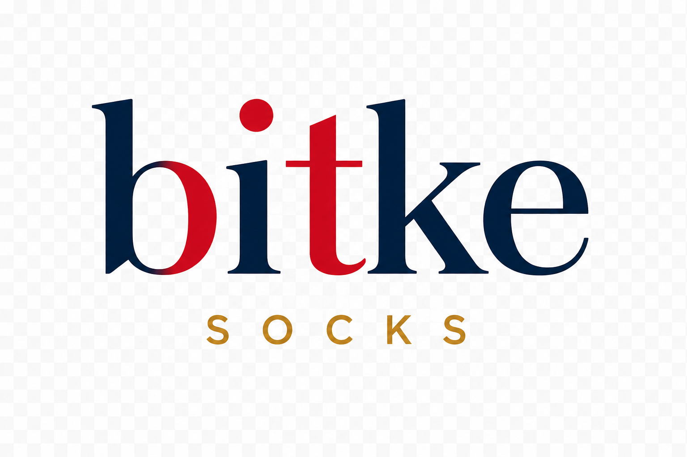
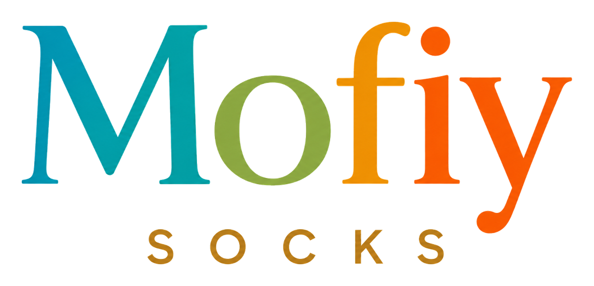
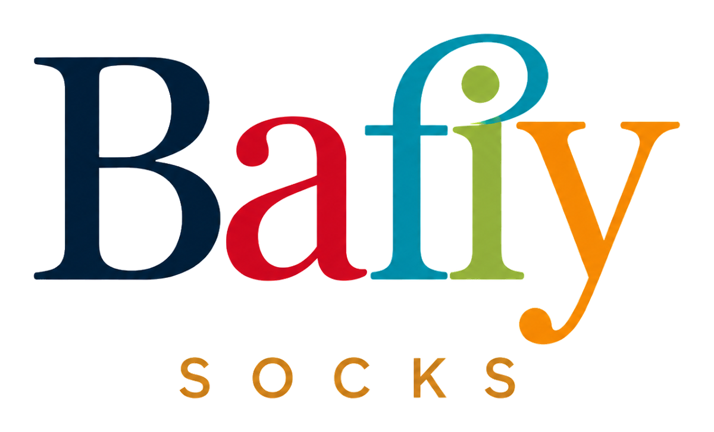
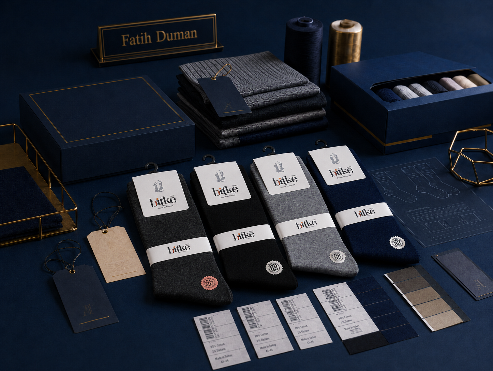

Markalarımız
Bitke, Mofiy ve Bafiy ile güçlü marka yapısı
DUMANLAR A.Ş.; farklı satış kanallarına, kullanıcı beklentilerine ve koleksiyon ihtiyaçlarına göre konumlanan markalarıyla çorap ve tekstil ürünlerinde kalite odaklı üretim sunar.
Marka Ailesi
Her marka farklı bir satış diline hizmet eder
Bitke, Mofiy ve Bafiy; aynı üretim tecrübesinden beslenen fakat farklı koleksiyon, kanal ve hedef kitle ihtiyaçlarına cevap verebilen marka yapılarıdır.

Bitke Socks
Günlük kullanıma uygun, konforlu, dayanıklı ve mağaza rafında kolay konumlandırılabilen çorap grupları için güçlü ana marka yaklaşımıdır.
- Erkek, kadın ve çocuk ürün grupları
- Günlük, klasik ve sezonluk koleksiyonlar
- Toptan satış kanallarına uygun ürün mimarisi

Mofiy Socks
Daha dinamik, renkli ve modern koleksiyon çizgisiyle genç, spor ve aktif kullanım ihtiyaçlarına cevap verebilen marka yapısını temsil eder.
- Modern renk ve desen seçenekleri
- Spor, günlük ve çocuk koleksiyonları
- Hedef kitleye göre ürün kurgusu

Bafiy Socks
Marka ailesine yeni ve özgün bir çizgi kazandıran Bafiy; tekstil ürünlerinde çeşitliliği artıran tamamlayıcı bir marka alanı olarak konumlandırılır.
- Özgün marka dili
- Yeni koleksiyonlara açık yapı
- Çorap ve tekstil ürünlerinde çeşitlilik

Marka Stratejisi
Koleksiyon, etiket ve ambalaj aynı çizgide planlanır
Bir çorap markasının güçlü görünmesi yalnızca ürün kalitesiyle değil; model seçimi, renk dengesi, etiket, ambalaj ve koli düzeninin birlikte düşünülmesiyle mümkündür.
DUMANLAR A.Ş. kendi markalarıyla edindiği üretim tecrübesini iş ortaklarının özel marka projelerine de aktarabilir.
EtiketAmbalajKoleksiyonBarkodKoli düzeni
Satış Kanalı Uyumu
Mağaza, market, toptan ve özel marka için ayrı kurgu
Ürün grupları satış kanalına göre farklılaştırılabilir; klasik, spor, bambu, modal, çocuk ve sezonluk ürün aileleri kanal beklentisine göre planlanabilir.
Toptan satış
Adet, beden, renk ve paketleme yapısı toptan satış akışına göre organize edilir.
Mağaza rafı
Etiket, ambalaj ve ürün ailesi perakende sunumuna uygun şekilde hazırlanabilir.
Özel marka
İş ortakları için markaya özel koleksiyon, etiket ve paketleme desteği sağlanabilir.
İş Birliği
Markanız için doğru ürün ailesini birlikte planlayalım.
Bitke, Mofiy ve Bafiy marka yapısını inceleyebilir; kendi markanız için özel üretim talebinizi bize iletebilirsiniz.